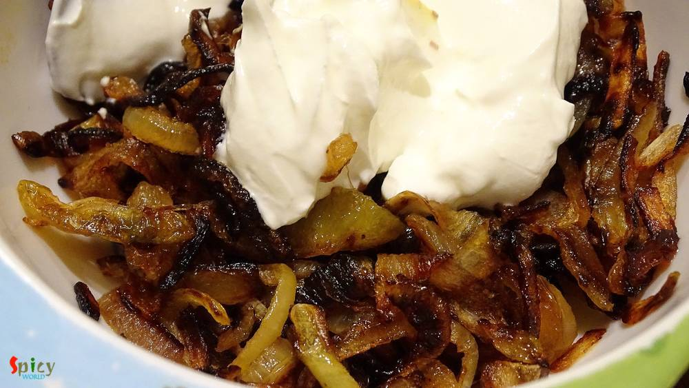

Simple and Easy Recipes
Chicken Korma
© 2016 Spicy World, Published on: Nov 21, 2015
When an inch of oil or ghee floats upon gravy, yes its 'mughlai nawabi dish'. 'Nawab' means king. This category of curries have nice colored, rich, thick, creamy gravy. 'Chicken Korma' is my favourite one. You can easily eat this curry once in a month along with 'biriyani', 'pulaao', 'butter naan' or 'rumali roti'. Do not put this kind of food in your regular diet because you have to make or eat korma without any guilt, otherwise you will never enjoy the richness of mughlai food.

Ingredients
- Chicken legs 2 pieces.
- 1 cup thinly sliced onion.
- Ginger and garlic paste 2 Teaspoons.
- Salt and sugar.
- Hung curd 1 cup.
- One cinnamon stick.
- Five green cardemoms.
- Four cloves.
- One star anis.
- 5-6 black pepper corns.
- Turmeric powder 2 Teaspoons.
- Coriander powder 1 Teaspoon.
- Cumin powder 1 Teaspoon.
- Nutmeg powder half Teaspoon.
- Mace powder half Teaspoon.
- Red chili powder 2 Teaspoons.
- 1 Teaspoons garam masala powder.
- Clarified butter/ ghee 6 Teaspoons.
- White oil 2 Teaspoons.
- Kewra water half Teaspoon.
- Warm water.

Steps
Marinate the chicken pieces with 1 Teaspoon turmeric,red chilli powder,mustard oil and salt. Keep it aside for 1 hour.
Fry the onion slices in oil till golden brown in color. Thn remove them from the pan.
Heat 2 Teaspoons ghee and 1 Teaspoon oil.
Add the marinated chicken legs and fry in high flame for 5 minutes. Then keep aside.
Now in that pan add the remaining ghee. Heat it.
Add cinnamon stick,cloves,green cardemoms and star anis. Saute it for a minute.
Then add the ginger and garlic paste. Fry it for 2 minutes.
Now take half cup of curd, all the spice powder, 1 Teaspoon sugar and pinch of salt in a bowl. Stir it very well.
Add the curd mixture. Cook this on slow flame for 20 minutes.
Then put the fried onion, the remaining curd and little water in a blender. Blend it to a smooth paste.
Add this paste into the pan. Stir this very well and cook it another 10 minutes.
Now add the fried chicken legs. Mix it well and Cook it for 7 minutes.
Then add some warm water and cook this with lid for 25 minutes or until the chicken become fully tendor.
Check the gravy and the chicken.
Lastly add little kewra water and garam masala powder. Mix it for 2 minutes and turn off your gas.
Let it rest for 5 minutes and then serve.
Your chicken korma is ready .... Enjoy ...!!
Serve hot with biriyani, naan, pulao.
")